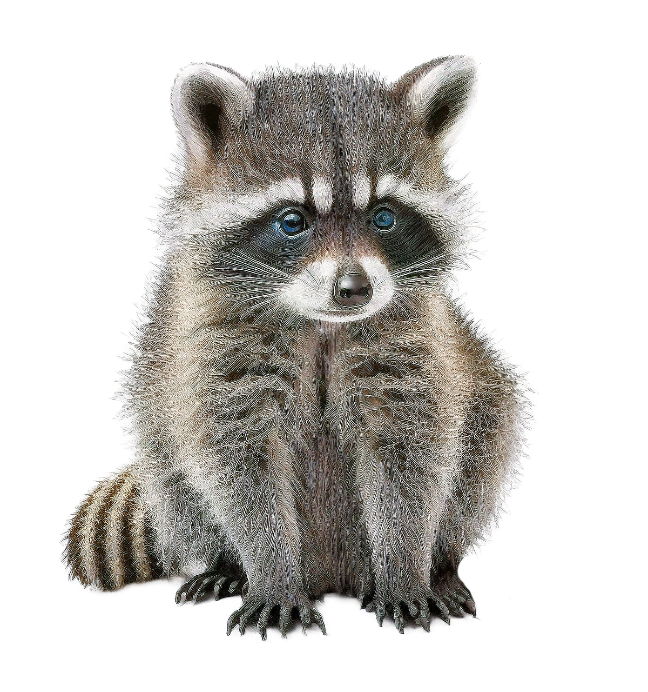

설치류
설치류 어류
어류 조류
조류 파충류
파충류 포유류
포유류라쿤

- 크키 : 평균 40 ~ 60cm
- 무게 : 2 ~ 15kg
- 수명 : 5 ~ 15년
- 식성 : 잡식성
- 활동주기 : 야행성
- 외국에서 수입 분양
- 국내 브리더를 통한 분양
잡식성이기 때문에 이것저것 잘 먹습니다.
주로 구하기 쉬운 강아지, 고양이 사료, 삶은 달걀, 과일, 닭 가슴살 등
식성은 개와 비슷함.
하지만 아무리 잡식성이라 하더라도 사람들이 먹는 자극적인 음식은 절대로 급여해서는 안 되며, 붉은 육류, 후추와 같은 음식은 주어서 안됩니다.
적절한 영양소가 포함된 음식을 제공
고양이의 모피와 위생 유지
깨끗한 물 공급
정기적인 수의사 진료 받기 추천
고양이가 사는 환경을 깨끗하고 안전하게 유지
장난감과 스크래쳐 등을 제공하고 즐겁게 해주면서 파괴적인 행동 방지하기
적절한 교육 필요
고양이에게 충분한 애정 및 관심 보여주기
다른 동물과 함께 키울 때 공존할 수 있도록 교육
예방접종 및 구충제 먹이기 등을 정기적으로 하기
목욕 : 고양이는 목욕을 싫어함. 억지로 제압하지 않고 계속 달래주면서 미지근한 물로 목욕시키기. 고양이샴푸 필요.
배변 훈련 : 배변통과 모래 필요. 먹이그릇과 가깝지 않은 곳에 두기.